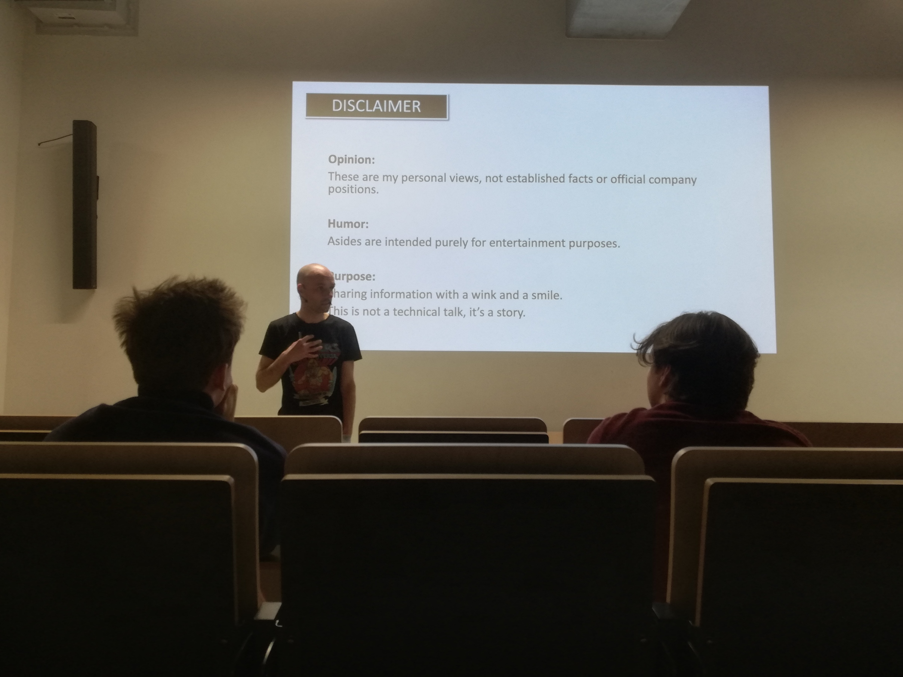
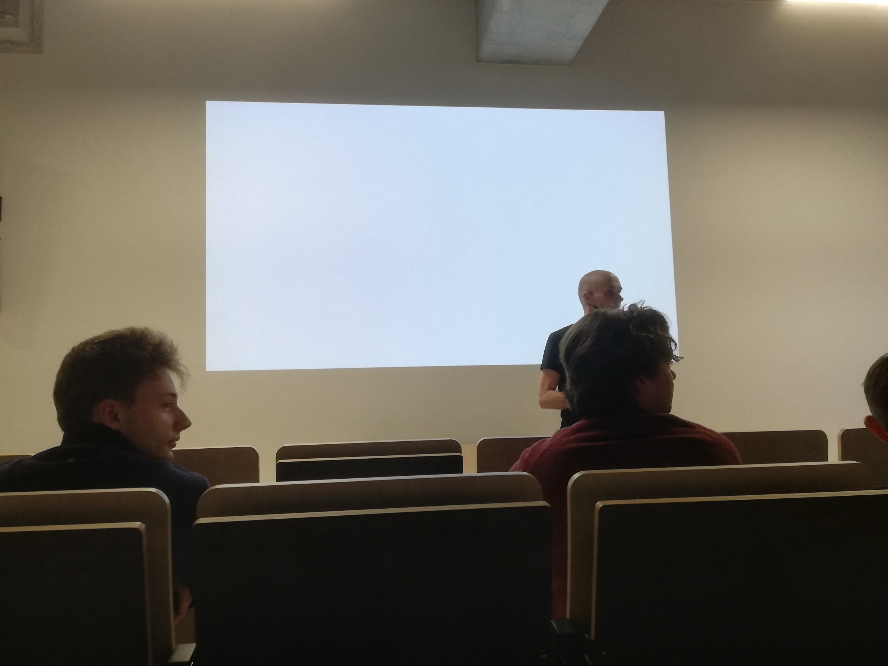
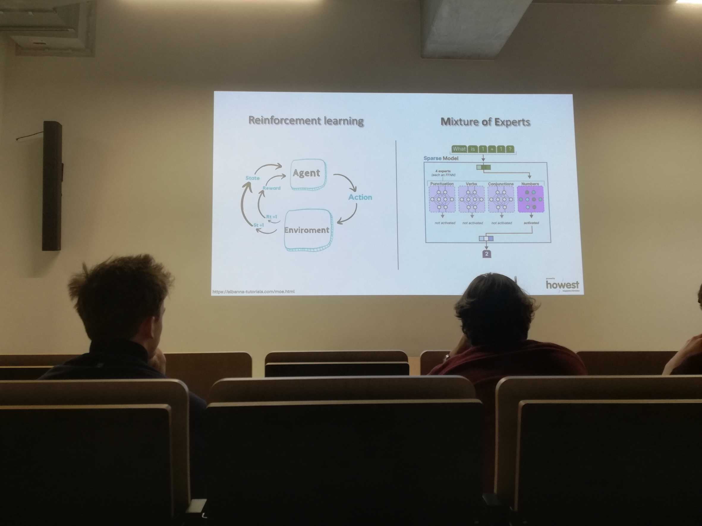
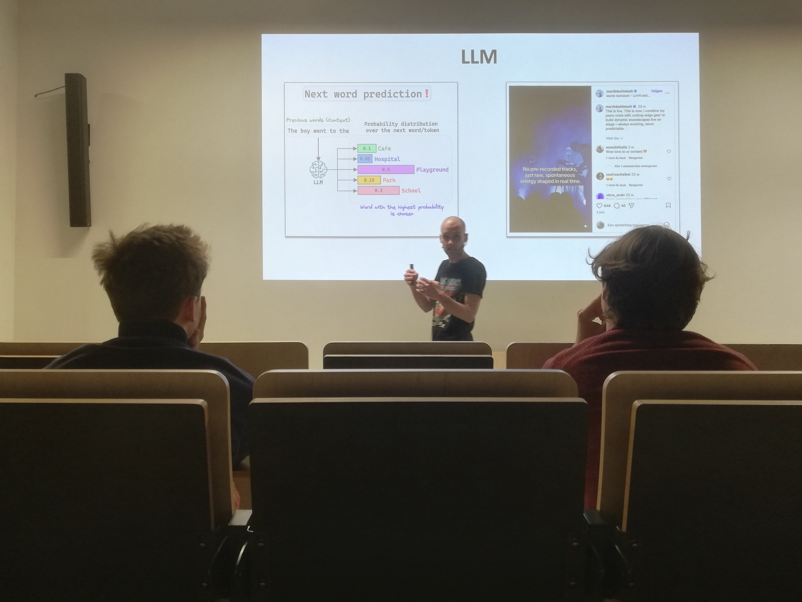
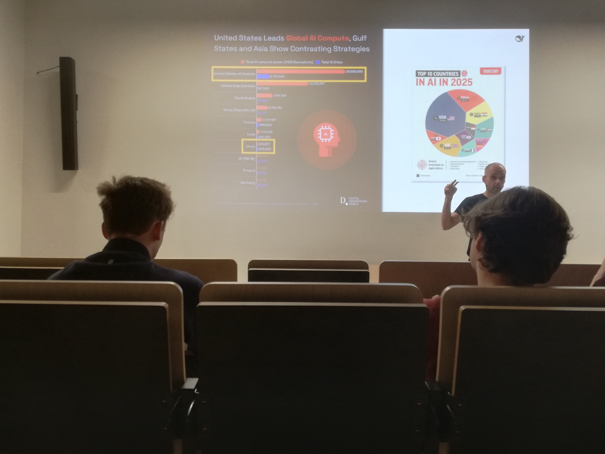
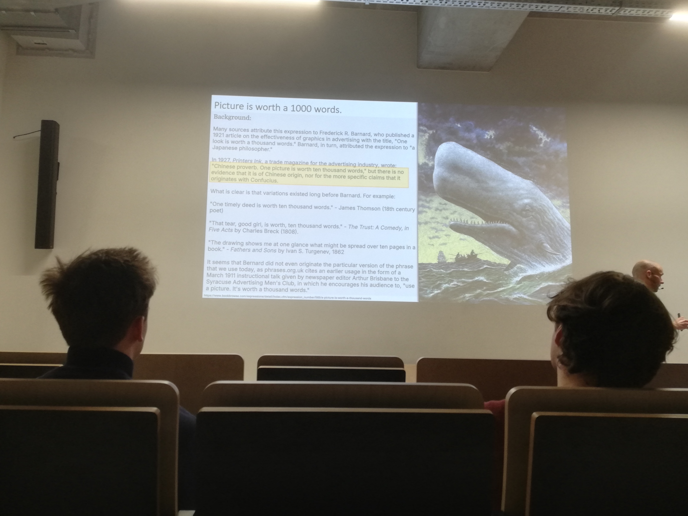
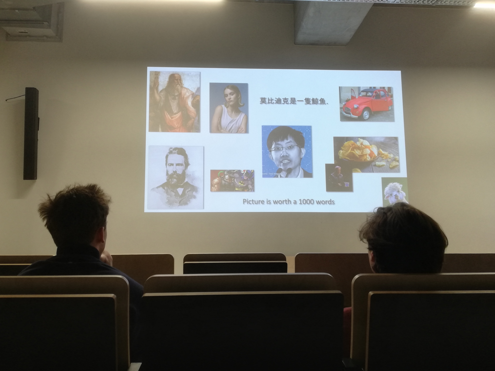

"Call me Ishmael." Met deze iconische openingszin uit Moby Dick opende Dimitri Casier de Tech&Meet sessie over DeepSeek aan Howest Brugge. Het was het begin van een avond waarin technologische innovatie werd verweven met klassieke vertelkunst. Dimitri trok een treffende parallel tussen de ongrijpbare witte walvis en DeepSeek: beide zijn monumentale verschijningen uit de diepte die een mix van bewondering en vrees oproepen. Net als het boek van Melville heeft ook het verhaal van DeepSeek een open einde; we bevinden ons midden in een omwenteling waarvan de uiteindelijke koers nog onbekend is.
De Geopolitieke Strijd om Rekenkracht
Een van de meest prikkelende onderwerpen was de geopolitieke context van deze AI-gigant. Terwijl westerse labs toegang hebben tot de nieuwste NVIDIA H100 chips, wordt China geconfronteerd met strikte exportbeperkingen. Hierdoor moet DeepSeek het doen met de minder krachtige H800 varianten. Deze hardware-beperking heeft hen echter gedwongen tot uiterst creatieve oplossingen. Door technieken als FP8 Precision Training te gebruiken, slagen ze erin om indrukwekkende prestaties neer te zetten met een fractie van de traditionele rekenkracht.
Dit roept fundamentele vragen op over "The Bane Factor": de inherente nadelen van gecentraliseerde macht versus de kracht van innovatie onder druk. De opkomst van DeepSeek, een model dat haaks staat op veel westerse ideologieën, dwingt ons om kritisch te kijken naar data-soevereiniteit en de toekomst van de globale AI-race.
Van LLM naar Reasoning: De Technische Shift
Technisch gezien is de evolutie van DeepSeek indrukwekkend. Waar de reis begon met de V1, V2 en V3 modellen — stuk voor stuk krachtige Large Language Models (LLMs) — ligt de echte doorbraak in de R0 en R1 series. Dit zijn geen klassieke tekstvoorspellers, maar echte redeneermodellen. Het grote verschil? Waar een V3 direct antwoordt, neemt een R1-model de tijd om een probleem intern te analyseren via een 'chain of thought' proces. Deze reasoning capabilities maken het model superieur in het oplossen van complexe logische en wiskundige vraagstukken.


Dark Factories en de Toekomst van Werk
Dimitri schetste ook een beeld van de toekomst met concepten zoals "Dark Factories". Dit zijn productieomgevingen die volledig autonoom draaien, zonder menselijke tussenkomst of zelfs maar verlichting, gestuurd door AI-agents. DeepSeek faciliteert deze transitie niet alleen via hun modellen, maar ook via hun ecosysteem van DeepSeek Chat, de DeepSeek API en hun bredere Deepsite platform. Het toont aan dat AI niet langer louter een 'tool' is, maar de ruggengraat wordt van een nieuwe industriële revolutie.




De avond was een krachtige reminder dat open-source AI de wereld kan democratiseren, maar ook nieuwe ethische dillema's met zich meebrengt. De sessie eindigde zoals ze begon: met een blik op de diepte. De AI-race is nog maar net begonnen, en de impact ervan zal, net als de jacht op Moby Dick, diepe sporen nalaten in onze samenleving.
Bekijk ook mijn originele post en de discussie op LinkedIn:
Bekijk op LinkedIn